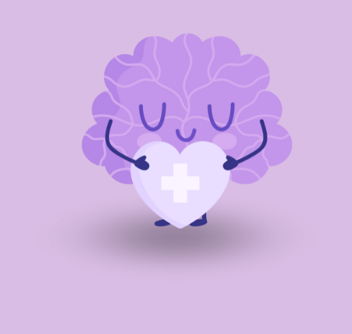
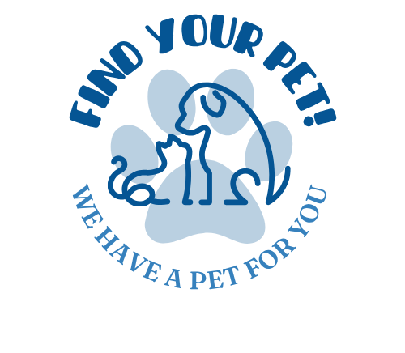

Sobre mí
Soy estudiante en doble turno: en la mañana estudio en la escuela y por la tarde en Súperate. Tengo conocimientos en inglés, programación, diseño, herramientas de Microsoft, fotografía y edición de video básica. He participado en proyectos grupales como Mood Mend, Chance y Find Your Pet. A través de estas experiencias he desarrollado valores y habilidades como liderazgo, resiliencia, trabajo en equipo y resolución de conflictos.
Habilidades
Qué busco
Aprender, participar en más proyectos colaborativos y mejorar mis habilidades en programación y producción audiovisual. Me interesan roles donde pueda aportar creatividad y liderazgo, además de seguir desarrollando trabajo en equipo.
Proyectos destacados

Mood Mend
Proyecto grupal enfocado en bienestar emocional — diseño de interfaz y soporte en documentación y pruebas.
Chance
App educativa para mejorar pronunciación en inglés — Cofundador, participé en diseño y guionización de lecciones, marketing y videos.

Find Your Pet
Plataforma para conectar mascotas perdidas con dueños — Cofundador, colaboración en investigación, pruebas y presentaciones.
Certificaciones

Microsoft Excel 2016
Certificación MOS — Certiport

TOEIC
Certificación en competencia de inglés